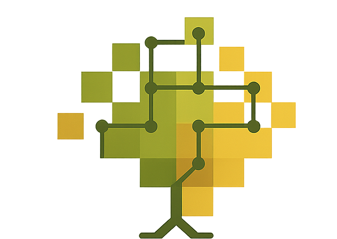

<footer class="redec2-site-footer" aria-label="Rodapé do site Rede C2">
  <div class="redec2-footer-inner">

    <div class="redec2-footer-brand">
      <a class="redec2-footer-home" href="index.html" aria-label="Página inicial da Rede C2">
        
      </a>

      <div class="redec2-footer-name">
        <strong>Rede C2</strong>
        <span></span>
      </div>
    </div>

    <div class="redec2-footer-contact">
      <div class="redec2-footer-title">Contato</div>
      <a href="mailto:c2redec2@gmail.com">c2redec2@gmail.com</a>
    </div>

    <div class="redec2-footer-links">
      <div class="redec2-footer-title">Código-fonte</div>
      <a
        href="https://github.com/giuliaottino/RedeC2"
        target="_blank"
        rel="noopener"
        aria-label="GitHub da Rede C2"
      >
        <i class="bi bi-github" aria-hidden="true"></i>
        <span>GitHub</span>
      </a>
    </div>

  </div>
</footer>

<script>
(function () {
  const PROJECT_BASE = "RedeC2";

  function getPathInsideSite() {
    let path = window.location.pathname;

    if (path.startsWith("/" + PROJECT_BASE + "/")) {
      path = path.replace("/" + PROJECT_BASE, "");
    }

    if (path === "" || path === "/") {
      path = "/index.html";
    }

    if (path.endsWith("/")) {
      path = path + "index.html";
    }

    return path;
  }

  function getRelativePrefix() {
    const path = getPathInsideSite();
    const parts = path.split("/").filter(Boolean);

    if (parts.length <= 1) {
      return "";
    }

    return "../".repeat(parts.length - 1);
  }

  function fixFooterPaths() {
    const footer = document.querySelector(".redec2-site-footer");

    if (footer && footer.parentElement !== document.body) {
      document.body.appendChild(footer);
    }

    const prefix = getRelativePrefix();

    document.querySelectorAll(".redec2-site-footer img[data-src]").forEach(function (img) {
      const src = img.getAttribute("data-src");

      if (!src) {
        return;
      }

      img.src = prefix + src.replace(/^\/+/, "");

      img.addEventListener("error", function () {
        img.classList.add("redec2-footer-logo-missing");
      });
    });

    document.querySelectorAll(".redec2-footer-home").forEach(function (link) {
      link.href = prefix + "index.html";
    });
  }

  if (document.readyState === "loading") {
    document.addEventListener("DOMContentLoaded", fixFooterPaths);
  } else {
    fixFooterPaths();
  }

  window.addEventListener("load", fixFooterPaths);
})();
</script>